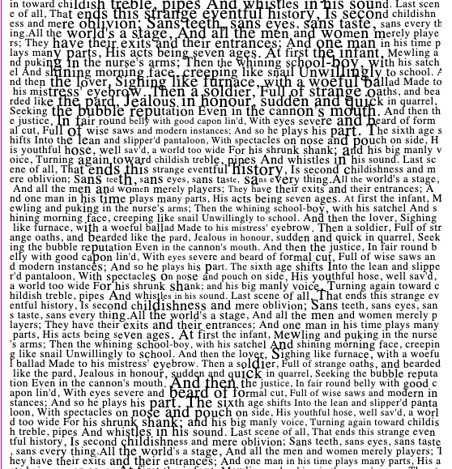
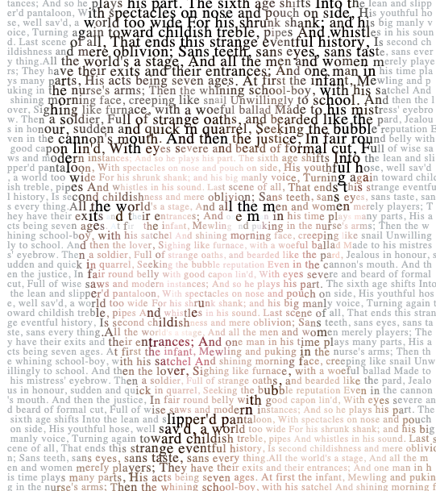
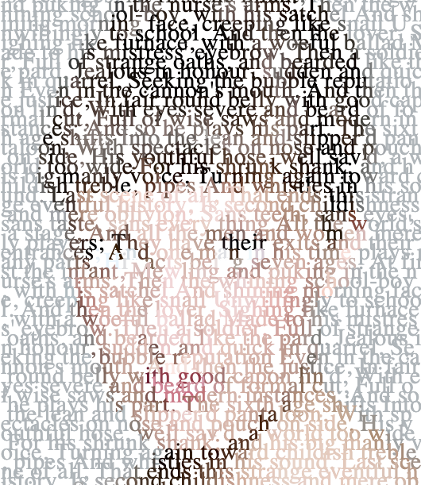
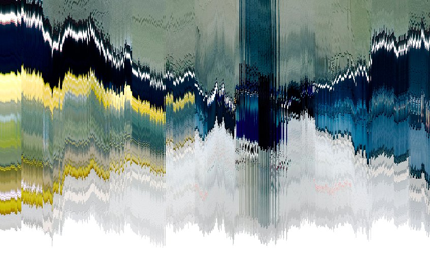
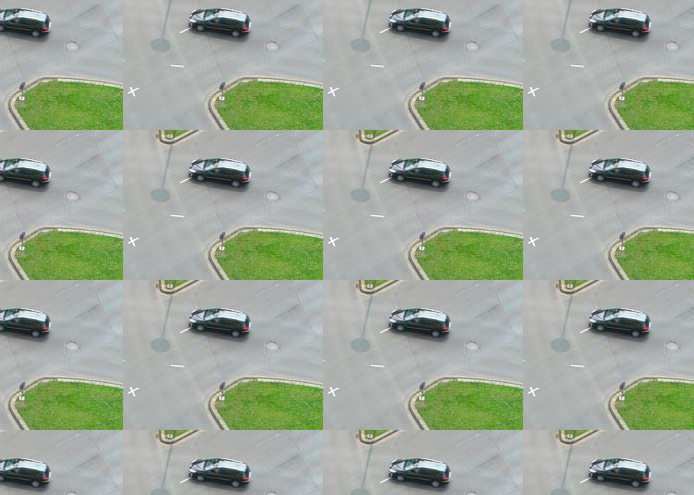
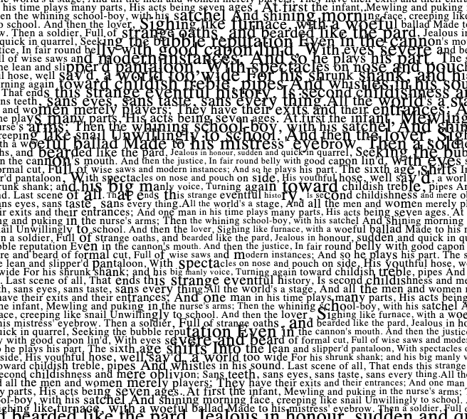
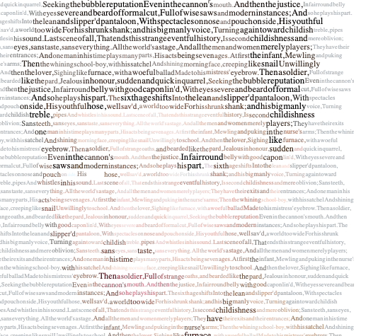
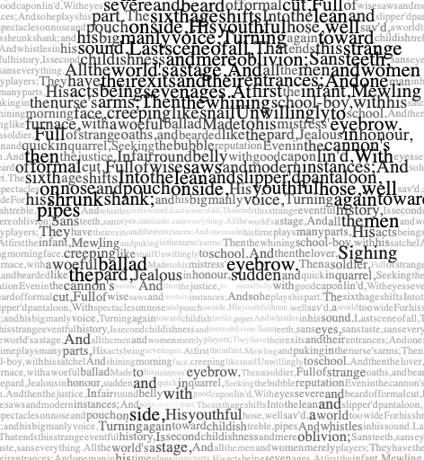
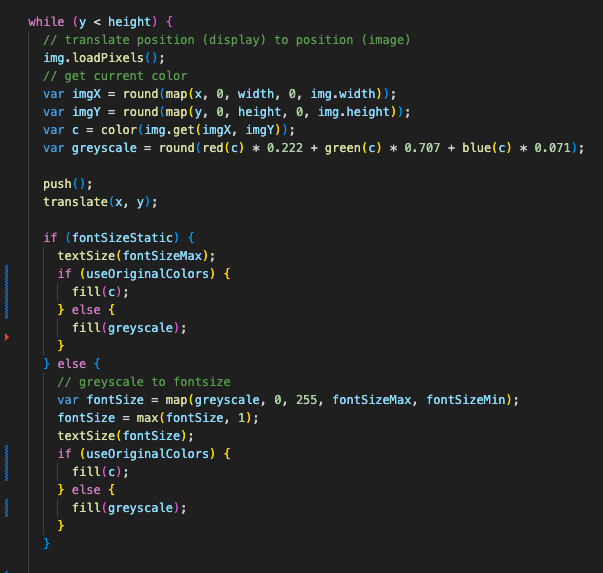

Experiment 4 - Images, Video, and Sound Art
Imitate
To develop artistic creativity in coding, it can be helpful to start by studying and learning from existing examples. This might involve reviewing code written by others, analyzing successful techniques, or even copying and modifying code to better understand how it works. By imitating and learning from existing techniques and strategies, we can gain a better understanding of what has been done before and what is possible, and identify opportunities for improvement and innovation.
What code did you start with? (You don't need to provide the code itself, but where did you start?) Document this step briefly.
A: First, I started off with code from "P_4_3_2_01", i really enjoyed the use of text in this piece and it was fun to play around with the fonts and shading to alter the teture of the overall image. I liked that even though it it's centered around one image there's so much freedom to change the original and it made me really think about how the image was still able to keep shape after those alterations.
  Integrate
After learning from existing techniques and strategies, we can build upon that foundation by combining elements from different sources. This might involve combining elements from different programming languages, using libraries or frameworks in new ways, or bringing together techniques from different fields or disciplines. By integrating and combining elements from different sources, we can create something new and unique.
How did you extend the code or combine with another technique to make something new? Document this step.
After experimenting with one piece I checked other generative design pieces that also included images and I found myself very interested in "P_4_1_1_01" and "P_4_1_2_01". These were vey interesting pieces as they also included static images like the original program I was looking at. However I like that these pieces offered more exploration rather than alteration, they allow the art to be admired and does not allow for as much interaction as other pieces. I thought that trying to find a way to use some elements from these pieces to make the orginal piece more interactive would be really interesting but I wasn't quite able to figure out how to integrate elements from these pieces smoothly. I experimented a lot but came up with a piece that was only slightly different than the original.
  Innovate
Finally, we can introduce new or original ideas to our coding process by thinking creatively and pushing the boundaries. This might involve developing entirely new techniques or approaches, or using existing techniques in new and creative ways. By innovating and introducing new ideas, we can create art that is truly groundbreaking.
How did you use the code as a jumping off point to create something truly unique and novel? Document this step thoroughly.
A: After being inspired by other pieces I ralized this time I wanted to try making something that didn't require as much interaction as past pieces I've made. I thought that the use of text and image was so fun so I wanted to create something that could be viewed like a video. To do this I wanted to allow the font, color and position of text to be randomly altered. At first it was difficult to think of how to change the art but I decided it would be fun to create something where I could admired the small things I liked about the original piece without having to interact with the piece too much.
  Reflection
Each person that worked on the code should reflect on the process, the difficulties, and the successes of the experiment. Here's where you can put your reflections.
- What part of the project you contributed
- A reflection on your work and the work of the team
- Brief highs and lows
This expirement was a lot of fun and I really enjoyed being able to explore more with videos this time. I was happy that there was enough freedom in what I could include or take out of the original piece to really make something new.